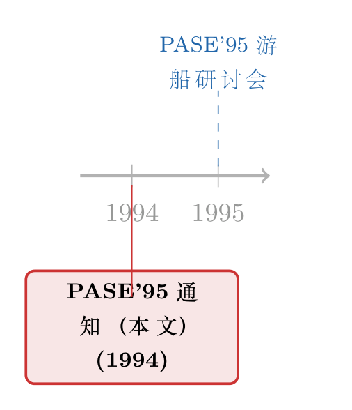

一张 1994 年的「上船通知」：金融机器学习的史前史，写在莫塞尔河上
本文读的不是一篇论文，而是 Journal of Financial Economics 36 (1994), p. 389 上的一则「News item」——一份名为 PASE'95 的学术会议征集通知。它只有一页，没有数据、没有模型、没有结果。但如果你愿意把它当作一块化石来读，它记下的，正是「让机器读懂市场」这个念头，在 1995 年那个夏天，第一次以一种近乎天真的姿态，敲响金融学大门的瞬间。
1 引言：一页纸，能读出什么？
先说一件有点尴尬的事。
这次要评述的「文献」，严格说来根本不是一篇文献。它是 1994 年《金融经济学杂志》(Journal of Financial Economics) 第 36 卷第 389 页上的一则新闻条目（News item），标题叫 PASE'95——第五届统计与经济学中的并行应用国际研讨会（5th International Workshop on Parallel Applications in Statistics and Economics），副标题写着六个字：Nonlinear Data Analysis（非线性数据分析）。通篇就是一封会议邀请函：时间、地点、议题、投稿截止日、主办方、联系方式。没有摘要，没有回归，没有一个系数，连一条像样的学术引用都找不到。
那它有什么可评的？
这正是有意思的地方。一篇论文告诉你「某人证明了什么」，而一页这样的通知，告诉你的是「那个年代的人在想什么、在赌什么、又在害怕什么」。论文是结论，通知是动机；论文是已经长成的树，通知是刚刚埋下、还不知道会不会发芽的那粒种子。三十年后回头看，我们恰好知道哪些种子发了芽、哪些烂在了土里。于是这一页纸，就成了一份难得的「分叉路口的现场记录」。
接着，一个自然的问题是：1995 年那个夏天，他们到底想干什么？
2 会议本身：一艘船，一份议程，一个时代的口音
先把这页纸上的硬信息摆出来，因为细节本身就是叙事。
会议定于 1995 年 8 月 29 日至 9 月 2 日 举行，地点写得格外浪漫——不在某个大学的报告厅，而是在一艘从特里尔 (Trier) 开往美因茨 (Mainz)、沿着莫塞尔河 (Mosel) 与莱茵河 (Rhine) 顺流而下的游船上。所有与会者都住在船上，人数限制在 约 100 人，先到先得（first come, first served——原文还把这句话拼错成了 "first conie\$rst Sert'e"，一份扫描件特有的笨拙）。
主办方是三家机构：ETH 苏黎世 (ETH Zurich) 的超级计算跨学科项目中心、Olsen & Associates（苏黎世应用经济学研究所），以及布拉格科学院计算机科学研究所。报名要走「匿名 ftp」(anonymous ftp maggia.ethz.ch)，或者一个叫 "world wide webb"（原文把 web 拼成了 webb）的新鲜玩意儿。
这几个细节，每一个都是时代的口音。
第一个口音，是会议名字里的「Parallel」。 今天我们谈机器学习，谈的是模型、是数据；那时候人们要先谈算力。PASE 的全称里赫然写着「并行应用」(Parallel Applications)，主办方是「超级计算中心」。为什么？因为在 1995 年，跑一个稍微大点的非线性模型，瓶颈不在想法，而在机器——你得有并行计算的超算才跑得动。把「统计」「经济学」和「超级计算」并列写进一个会议名里，本身就说明：那一代人清楚地意识到，新方法是被硬件喂养的。这件事三十年没变，只是「超算」换成了 GPU 集群。
第二个口音，是议程里那串词。 这份通知列了六个议题方向，我把它们原样抄下来：
- 金融、经济与自然科学中的应用；
- 用于发现确定性与混沌行为 (deterministic and chaotic behavior) 的统计检验；
- 用于度量稳定性与平稳性 (stability and stationarity) 的统计检验；
- 高频数据 (high-frequency data) 的采样与提取技术；
- 非线性多元时间序列 (nonlinear multivariate time series) 的建模与分析；
- 神经网络、遗传算法与模糊系统 (neural networks, genetic algorithms, and fuzzy systems) 的统计运用。
把这串清单读第二遍，你会有一种奇异的「穿越感」：除了「模糊系统」「混沌」这两个略带 90 年代特有浪漫主义的词，其余几乎每一项，都精确命中了今天金融机器学习的主战场。神经网络、高频数据、非线性时序——这就是 2020 年代顶刊版面的关键词，只不过在 1994 年，它们还得挤在一封游船邀请函里，向一群将信将疑的金融学家自我介绍。
第三个口音，是 Olsen & Associates 的名字。 这家机构今天的金融工程学生未必都听过，但凡是认真做过高频数据的人都绕不开它。正是 Olsen 和它的研究团队，在 90 年代系统性地收集、清洗、分析逐笔外汇报价，把「高频金融数据」从一个奢侈品变成了一门可研究的学科。所以这页通知里第四条「高频数据的采样与提取技术」，绝不是凑数的口号，而是主办方的看家本领。
「高频数据」在 1995 年是个前沿到近乎奢侈的概念。今天我们习以为常地讨论「用多细的数据、隔多久采一次样」，但这套直觉是后来才被严谨地算清楚的——一秒一笔的数据，反而常常只敢隔五分钟用一次，背后是微观结构噪声与积分波动率之间的权衡（关于这一点，可参见《一秒一笔的数据，为什么只敢拿 5 分钟用一次？》 与《把『看不见的波动率』变成一张可以直接称重的表》）。PASE'95 站的，正是这条路的起点。
3 真正关键的一步：这是一份「分叉路口」的记录
但真正关键的一步，不在于这页纸列了哪些词，而在于——三十年后，这串词里有的成了主角，有的成了脚注。
先看那条没走通的路：混沌。
90 年代初，金融学界曾掀起一股不小的「混沌热」。其逻辑诱人到难以抗拒：如果市场看似随机的价格波动，背后其实是某个低维确定性系统 (low-dimensional deterministic system) 在运转，那么所谓的「随机性」就只是我们没看懂的复杂表象——只要找对了那几个状态变量，原则上市场是可以被「解码」的。PASE'95 议程里「用于发现确定性与混沌行为的统计检验」这一条，押的就是这个宝。
然后，反转出现了。
这条路基本上走到了死胡同。后来大量的实证检验发现，金融时间序列里很难找到低维混沌的可靠证据；价格的复杂性，更像是高维的、被新信息不断驱动的随机性，而不是一个藏在幕后的简单确定系统。「混沌能解码市场」这个浪漫的梦，最终没有兑现。今天你翻遍顶刊，几乎再也见不到「金融市场是低维混沌」这样的主张了——它和「模糊系统」一起，成了那个年代的时代印记。
但同一份议程里，另外几条路却一路走到了今天的中心舞台。
神经网络这一条，活了下来，而且活得很好。在 PASE'95 的年代，「让神经网络去看 K 线图」还被主流学界当成江湖术士的玩意儿；可三十年后，机器学习不仅登堂入室，还反过来逼着我们重新思考「技术分析」到底捕捉到了什么（关于这条线，可参见《让机器去看 K 线图：一台神经网络，把「技术分析」从学术的垃圾桶里捡了回来》 与《using-genetic-algorithms-to-find-technical-trading》——后者标题里的「遗传算法」，正是 PASE 议程里的第六条）。
高频数据这一条，更是从奢侈品变成了基础设施。
所以你看，这页一文不值的会议通知，其实是一张摄于分叉路口的快照。1995 年的他们，把赌注同时押在了好几匹马上：混沌、模糊系统、神经网络、遗传算法、高频数据。他们当时并不知道哪匹会赢——这恰恰是它珍贵的原因。我们今天读论文，读到的都是「事后赢家」的逻辑；而读这页通知，我们读到的是「事前」——一群聪明人在迷雾里，凭着直觉同时下注的样子。
4 一个值得停下来的细节：方法在前，问题在后
读完这页纸，我心里其实有一点隐隐的不安，想单独拿出来说。
请再看一眼那六条议题。它们几乎全是方法：检验、采样技术、建模工具、神经网络、遗传算法……唯独第一条「金融、经济与自然科学中的应用」是泛泛的「应用」，没有任何具体的经济问题。换句话说，这是一场以工具为中心、而非以问题为中心的聚会。大家带来的是「我有一把新锤子」，而不是「我有一颗非敲不可的钉子」。
这是那个技术乐观主义年代的典型气质，也埋下了后来金融机器学习反复挨批的那个老问题：方法的炫目，常常跑在经济意义的前面。 一个神经网络能把样本内拟合得天衣无缝，却未必告诉你任何关于市场如何运转的东西；一个能「预测」收益的黑箱，可能只是把已知的套利因子重新发明了一遍（关于这种「祛魅」，可参见《机器学习是不是在「重新发明」套利？》 与《把机器学习的黑箱拆成玻璃箱：公司债收益率能被「看懂」地预测吗？》）。
从 1995 到今天，金融学真正学会的一课，或许不是「用了多复杂的模型」，而是「怎么逼着复杂的模型交代出经济学意义」。这一页通知里那种纯粹的、未经反思的方法热情，正是这趟三十年旅程的起点——天真，但充满生命力。
5 文献脉络
老实讲，这页通知本身不含任何学术引用，所以这里我没法像评述正常论文那样，给你排出一条由作者亲手引用的参考文献链。我能做的，是把这页化石放回它所处的那条更大的脉络里。
这条脉络的早期，是把随机过程与非线性时序引入金融——70 至 80 年代，人们已经在用 ARCH/GARCH 之类的工具刻画波动率的「扎堆」与非线性，时间序列分析成了量化金融的基本功。到了 90 年代初，野心进一步膨胀：既然线性模型不够，那就上混沌、神经网络、遗传算法——PASE'95（1994 年发出通知、1995 年开会）正是这一波技术乐观主义的一个切片，由 Olsen & Associates 与 ETH 的超算力量共同托举。

再往后，故事分了岔：混沌路线逐渐沉寂，而高频数据 + 机器学习这两条线汇流，长成了今天我们熟悉的金融机器学习。所以这页 1994 年的通知，站在的位置是——旧的线性时序范式之后、现代机器学习范式之前的那道门槛上。它不属于任何一个成熟范式，它就是范式与范式之间，那段尚未命名的过渡期。
6 评论与延伸（Q&A + 研究方向）
(a) 几个可能的疑问
Q：一则会议通知，凭什么值得专门写一篇评述？
因为它的价值不在「内容」，而在「证据」属性。作为正经研究它一文不值——没有数据、没有识别、没有结论。但作为一手史料，它精确地记录了 1995 年「非线性 / 机器学习」进入金融学时的议题清单、主办机构与技术语汇。我们今天对金融机器学习的所有事后叙事，都需要这样的「事前快照」来校准——它让我们看清，哪些是真知灼见，哪些不过是后见之明。
Q：「非线性数据分析」和今天说的「机器学习」是一回事吗？
有重叠，但不等同。PASE'95 的清单里，神经网络、遗传算法确实是今天机器学习的直系祖先；但「混沌检验」「模糊系统」这两支，基本没有进入现代机器学习的主流。所以更准确的说法是：今天的金融机器学习，是 1995 年那一篮子「非线性方法」里经过自然选择活下来的那几支，而不是整篮子。
Q：为什么会议名里要强调「并行」(Parallel) 计算？这跟金融有什么关系？
这恰恰暴露了那个年代的真正瓶颈：算力，而非想法。非线性、高维、高频的方法，在 1995 年是计算密集型的，离开超算根本跑不动。把「超级计算中心」放进主办方名单，等于承认了「方法被硬件喂养」这个朴素事实。今天 GPU 之于深度学习，就是当年超算之于 PASE——技术换了名字，约束没变。
Q：当年押注「金融市场是低维混沌」的人，错在哪里？
错在低估了市场复杂性的维度。低维混沌的诱惑在于「看似随机、实则可解码」；但后续实证普遍发现金融序列里缺乏可靠的低维混沌证据，价格的复杂性更像高维、被信息流持续驱动的随机性。这不是说「非线性」错了，而是「低维确定性」这个具体假设错了——非线性的另几支（神经网络、高频波动建模）反而枝繁叶茂。
Q：Olsen & Associates 出现在主办方里，重要吗？
很重要。它是高频金融数据的开拓者之一，把逐笔报价的收集与分析变成了一门正经学科。它的在场说明，PASE'95 议程里「高频数据采样与提取」绝非空话，而是主办方的核心能力。这也解释了为什么这条线后来走得最远——它背后有真实的数据基础设施，而不只是一个漂亮的方法名词。
Q：这页通知对今天做金融机器学习的人，有什么教训？
一句话：警惕「方法在前、问题在后」。这份议程几乎全是工具、鲜有具体经济问题，这正是技术乐观主义最容易翻车的地方。一个拟合极好的黑箱，可能什么经济学都没告诉你，甚至只是把已知因子重新发明了一遍。三十年的经验是——能活下来的，是那些被逼着交代出经济意义的方法。
(b) 几个可能的研究问题与提案
1. 给「非线性方法热」做一次学术史的计量考古。
【经济故事】PASE'95 这样的会议，是观察一个方法范式如何兴起、扩散、又部分消亡的绝佳切片。把 90 年代以来「混沌」「神经网络」「遗传算法」「高频」等关键词在金融顶刊的出现频率、被引轨迹画出来，能直接验证本文的叙事：哪些是真兴起，哪些是泡沫。 【可行性】高。数据是公开的期刊全文与引文库（如 Web of Science / JSTOR），方法就是文本计量与引用网络分析。唯一的难点是关键词的消歧。这是一篇 doable 的金融思想史论文。
2. 把「方法领先于问题」量化成一个可检验的命题。
【经济故事】如果某一波方法创新确实「工具在前、经济问题在后」，那它的论文应当呈现出某种特征：早期高度集中于方法 / 拟合优度，经济解释滞后若干年才补上。可以用 LLM 给论文打「方法导向 vs. 问题导向」的标签，看金融机器学习这一波是否符合这个模式。 【可行性】中。文本可得、LLM 打标签可行，难在标签的效度与人工校验；「经济意义何时补上」也需要主观判断。但作为一篇关于「金融学如何消化新方法」的元研究，很有意思。
3. 把高频 + 机器学习的工具，搬到公司债与信用市场。
【经济故事】PASE'95 的高频与非线性方法，最初长在外汇和股票上；而公司债市场恰恰是高频数据稀缺、非线性（违约、流动性枯竭）极强的地方。把现代高频流动性度量与机器学习预测，用在公司债的成交序列上，可能揭示出股票市场看不到的非线性流动性结构。 【可行性】中。数据有 TRACE 逐笔成交，方法成熟；难点在公司债成交稀疏、噪声大，识别「真信号」需要格外小心。但方向扎实、且贴近信用市场的真实痛点。
4. 重访「金融混沌」：用今天的算力和数据，给那个失败的赌注做个体面的讣告（或翻案）。
【经济故事】当年判混沌「死刑」，部分是受限于数据长度与算力。用今天的高频长样本、现代非线性动力学检验，系统地复核「金融序列是否存在低维确定性结构」，既是对一段学术史负责，也可能在某些细分市场（如某些受政策强约束的市场）找到局部例外。 【可行性】中偏低。检验方法成熟，但「证明不存在」天然困难，且结果很可能仍是否定的——学术回报有限。更适合作为一篇有史学价值的「祛魅」论文，而非追求惊人发现。
7 我的判断
作为评述者，我得诚实：用任何常规的学术标准衡量，这都「不是一篇论文」——它没有研究问题、没有识别策略、没有数据，自然也谈不上贡献与稳健性。我甚至无法对它的「识别」提出担忧，因为它压根没有需要识别的因果命题。
但如果换一把尺子——把它当作一份时代的切片来读，它的价值反而清晰起来：它精确地、不带后见之明地记录了 1995 年「让机器读懂市场」这个念头的原始模样。那串议题清单（混沌、神经网络、遗传算法、模糊系统、高频数据）就像一份「事前下注单」，而我们今天恰好知道了开奖结果——这种「事前 vs. 事后」的对照，是任何一篇成熟论文都给不了你的。
我唯一的遗憾，是这页扫描件实在太单薄：我们看不到这 100 个人最后在船上讲了什么、争论了什么、谁的预言对了、谁的落了空。如果后续能找到 PASE'95 的论文集或会议纪要，把「事前下注单」和「事后成绩单」逐条对上，那将是一篇极有意思的金融思想史研究——它能告诉我们的，远不止一场游船会议，而是一门学科是如何学会与一种全新方法相处的。
至于现在，我们手里只有这一页纸，和它身上那个被拼错的单词 "world wide webb"。一个连「万维网」都还没拼对的年代，已经在认真讨论怎么用神经网络读懂市场了。这本身，就值得记上一笔。
参考文献
- PASE'95 — 5th International Workshop on Parallel Applications in Statistics and Economics: "Nonlinear Data Analysis", Trier/Mainz, Germany, August 29–September 2, 1995 (News item). Journal of Financial Economics 36 (1994), 389.